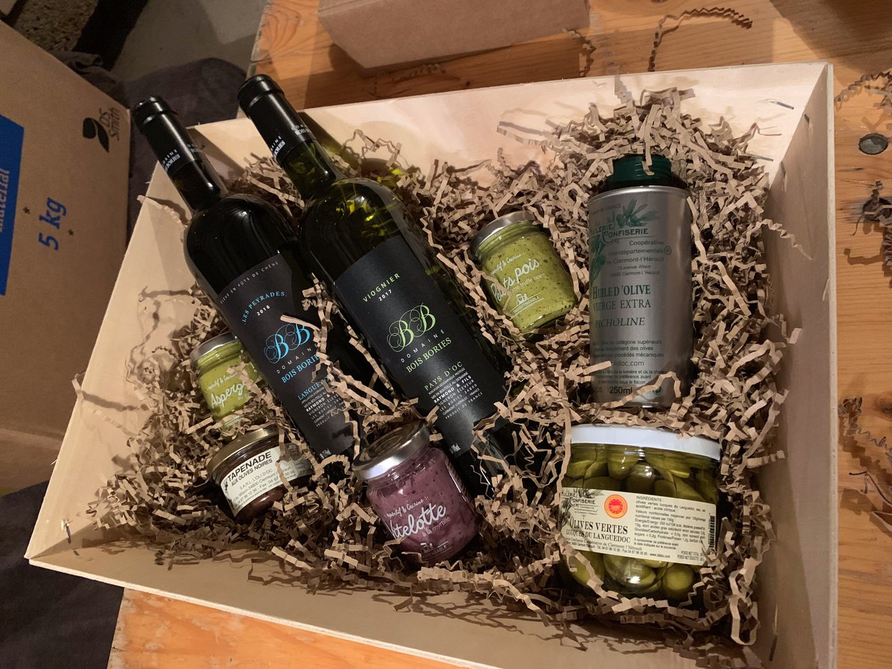
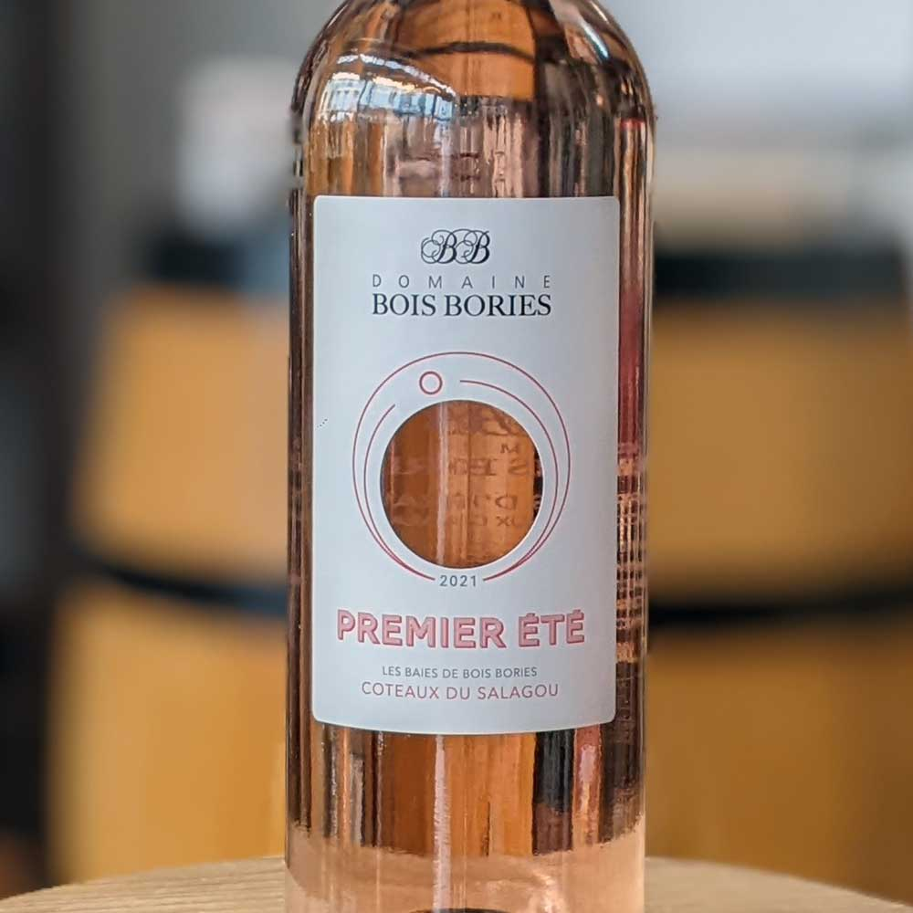
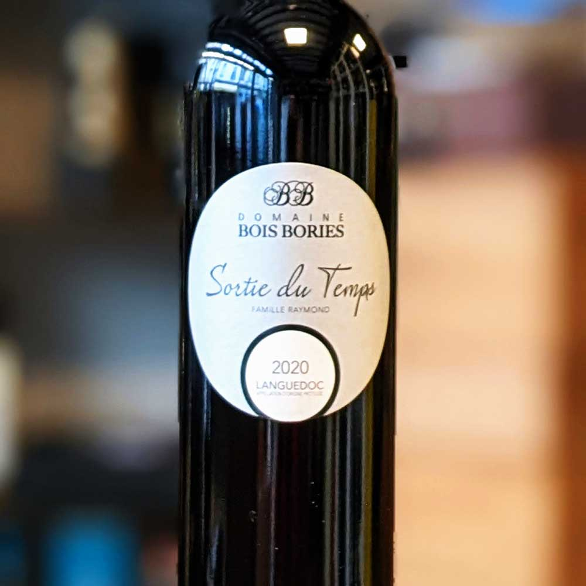
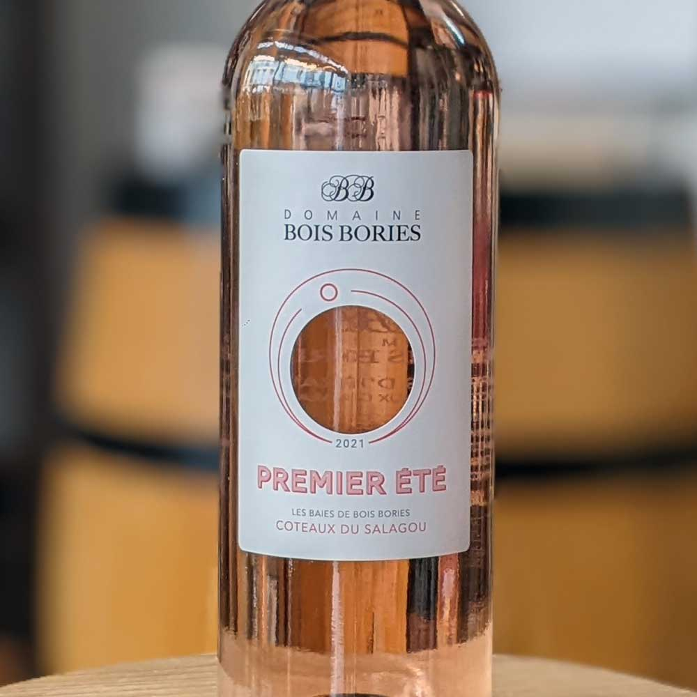
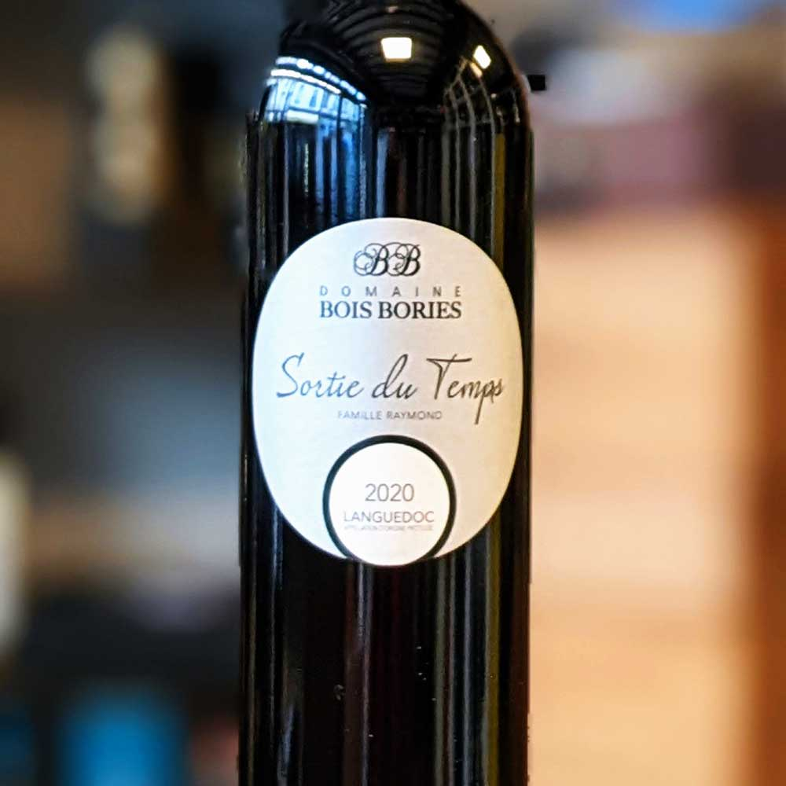
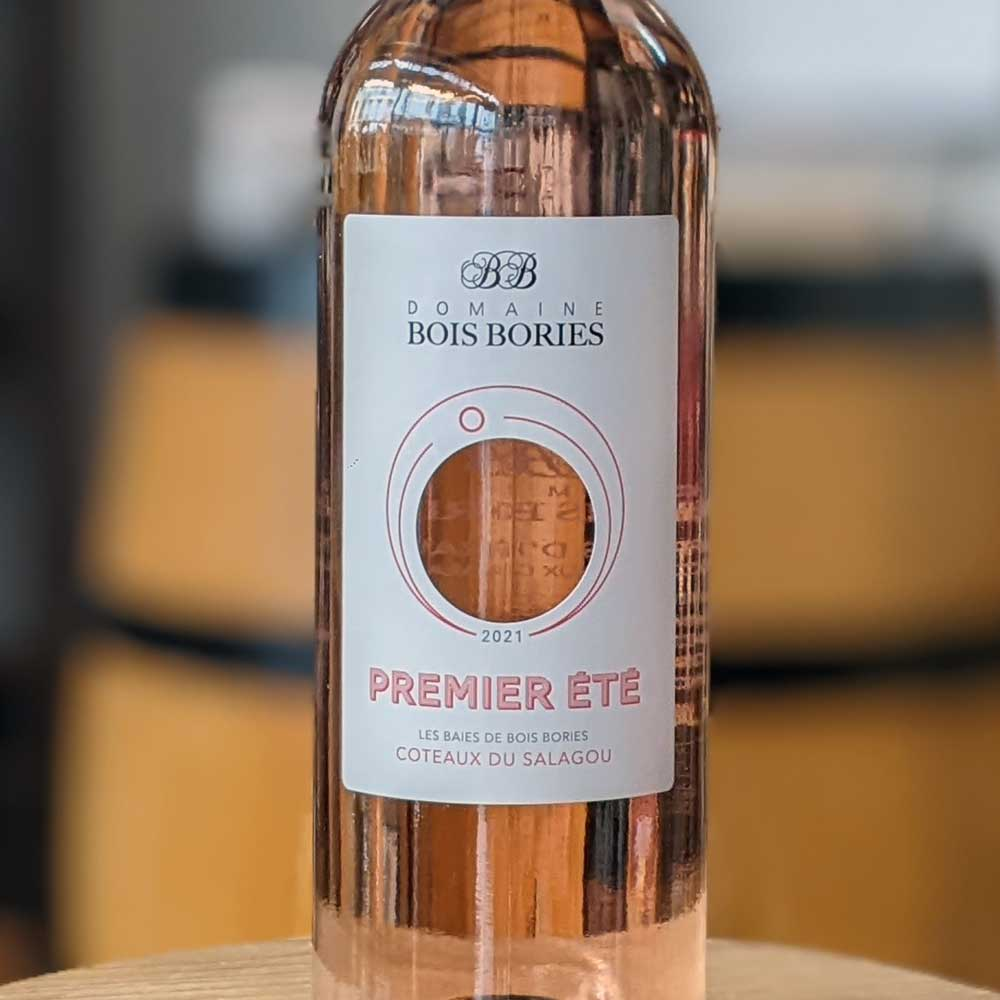
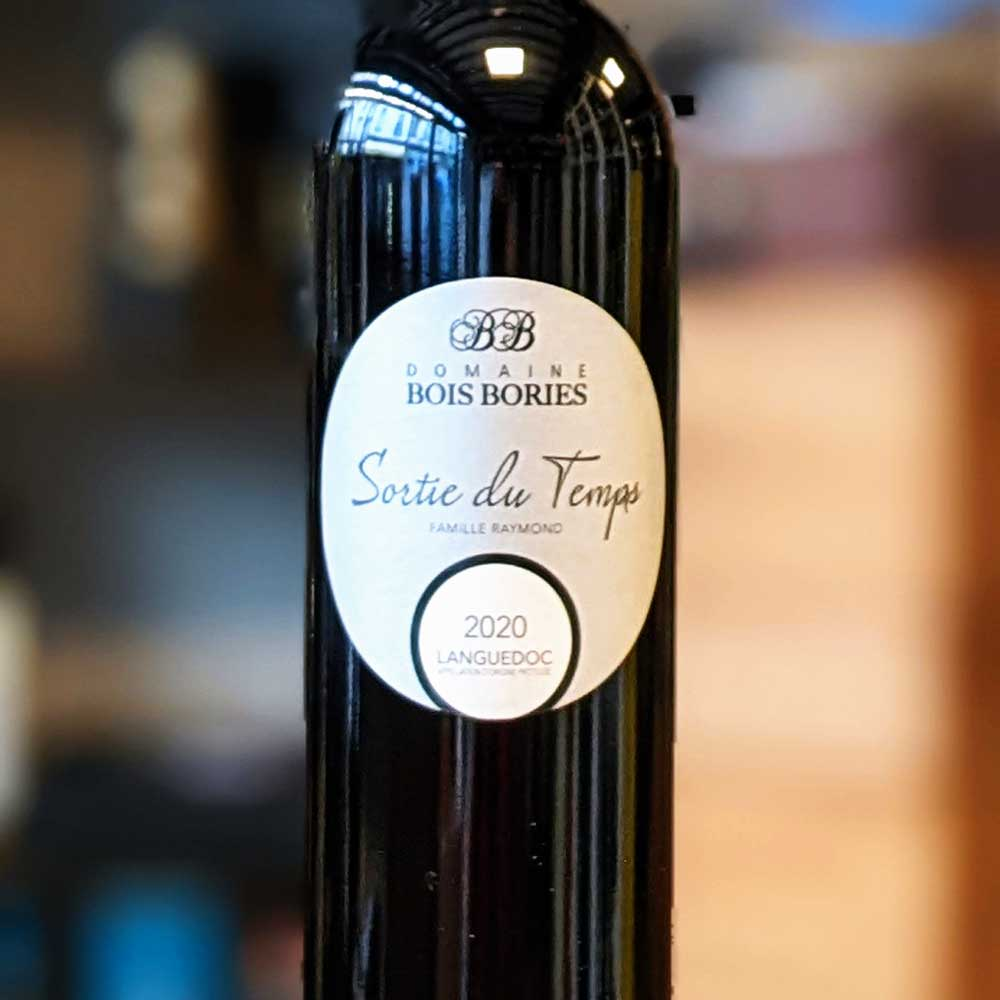

 





Маршрут дегустации
- Viognier — абрикос, груша, белые цветы. 10–12 °C. Пара: устрицы, гребешки, козий сыр.
- Premier Été Rosé (Syrah+Grenache) — клубника, малина, роза. 8–10 °C. Пара: тапенада, салаты.
- Les Peyrades Rouge (Syrah+Grenache) — вишня, слива, перец, шоколад. 16–18 °C. Пара: ягнёнок, паста, сыр том.
- Sortie du Temps (Mourvèdre+Grenache) — лавр, специи, кожа. 18 °C, декант 15 мин. Пара: утка, дичь, комте/рокфор.